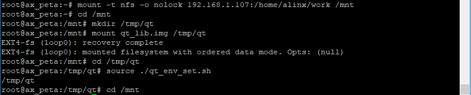
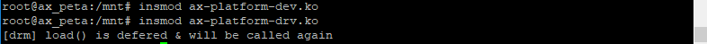
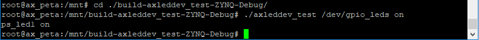
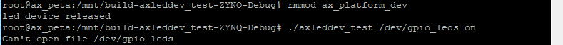
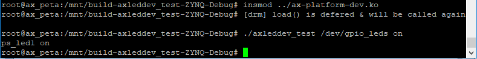

platform平台设备#
前面一直都是使用字符设备框架来编写简单的IO读写驱动，但是遇到复杂的总线和设备时，仅有字符设备框架是没法应对的。比如，当SPI总线挂载了多个设备时，这些设备的驱动该如何实现，SPI的驱动如何实现，他们之间又如何关联？强行去写也许可以实现功能，但最终的代码会很不环保，复用性很难保证，不符合Linux的设计思想。这时就需要用到驱动分离的思想。对此，Linux内核提供了platform设备框架。
驱动分离#
在说platform之前，先简单说说驱动分离的思想。
有没有想过这个问题，我们前面写的点亮LED实验中的驱动，到底是IO的驱动还是LED的驱动呢？暂且结合起来看作是IO_LED驱动，那么后来我们又用到按键，又有了IO_KEY驱动，如果现在要使用蜂鸣器了，就会出现IO_BUZZER驱动，每多一个设备，就会多一个IO_XXX驱动。
但是这些IO_XXX驱动中，IO的部分几乎是一样的，为了保证代码的简介，把IO的部分单独拎出来，写成一个IO驱动，然后设备的驱动就只剩下设备自身的内容，只要去调用IO驱动中的接口即可。
问题又来了，Linux的一大卖点是易与移植，现在需要在其他的硬件平台上运行使用这些设备驱动又会变成什么样子呢。不同厂家SOC上的GPIO底层的实现都有所差别，那每出现一个新的SOC，就需要重写一个GPIO驱动。当然这是不可避免的，但是这些GPIO驱动中，还是有共同的部分，即IO和设备之间的接口，把这些GPIO中的接口部分再拎出来，单独写成一个驱动。
这样就形成了驱动的分离，一边是SOC的硬件资源，另一边是用户设备，他们通过统一的接口来连接。驱动分离的思想带来了很多好处，Linux长久的发展中，省去了很多冗余的代码，SOC厂家根据统一的接口提供SOC片上外设的驱动，设备厂家也根据结构统一的接口提供设备的驱动，用户只需要选择好SOC和外设，就能很方便的关联到一起。这样的思想也延续到了单个SOC中，片上驱动(之后称为驱动)和设备驱动(之后称为设备)通过总线协议来关联。
当我们往内核中添加驱动时，总线就会查找对应的设备，添加设备时就去查找对应的驱动。这就是Linux中的bus、driver、device模型，platform就是这种模型的实现。
platform模型#
SPI等总线设备很容易去对应bus、driver、device模型，但是SOC上并不是所有资源都有总线的概念，比如GPIO。为了对应bus、driver、device模型，platform模型定义了platform_bus虚拟总线、platform_driver和platform_device分别来对应模型总线、驱动和设备。有一点要说明的是，platform平台设备模型虽然名字里有”平台设备”，但他并不是独立于Linux三种设备之外的新的设备类型，他强调的模型二字，只是一种框架，在使用中，是无法和字符设备、块设备、网络设备脱离关系的。
platform_bus#
内核中使用bus_type结构体表示总线，定义在文件include/linux/device.h中：
struct bus_type {
……
int (*match)(struct device *dev, struct device_driver *drv);
……
};
成员中的match函数就是驱动和设备匹配的关键，他的两个输入参数一个是drv一个是dev也就是驱动和设备，每个总线类型都必须实现这个函数。
platform虚拟总线也是bus_type类型的变量，在文件drivers/base/platform.c中定义如下：
struct bus_type platform_bus_type = {
.name = "platform",
.dev_groups = platform_dev_groups,
.match = platform_match,
.uevent = platform_uevent,
.pm = &platform_dev_pm_ops,
};
看一下其中match函数的实现platform_match函数，也在这个文件中：
static int platform_match(struct device *dev, struct device_driver *drv)
{
struct platform_device *pdev = to_platform_device(dev);
struct platform_driver *pdrv = to_platform_driver(drv);
/* When driver_override is set, only bind to the matching driver */
if (pdev->driver_override)
return !strcmp(pdev->driver_override, drv->name);
/* Attempt an OF style match first */
if (of_driver_match_device(dev, drv))
return 1;
/* Then try ACPI style match */
if (acpi_driver_match_device(dev, drv))
return 1;
/* Then try to match against the id table */
if (pdrv->id_table)
return platform_match_id(pdrv->id_table, pdev) != NULL;
/* fall-back to driver name match */
return (strcmp(pdev->name, drv->name) == 0);
}
platform_match函数提供了4种匹配方式。
11~12行，设备树下会使用的OF匹配表匹配方式，match的输入参数之一drv的数据类型中有一个成员变量of_match_table，of_match_table又有一个成员为compatible，如果这个compatible能和设备树种的compatible属性相匹配，驱动代码中的probe就会被调用。
如果没有使用设备树，一般会使用23行的第四种匹配方式，直接比较驱动和设备中name成员。
platform总线是不需要驱动层面去管理的，也就是说对于驱动开发开艳，了解其中原理即可。
platform_driver#
定义并初始化platform_driver
platform驱动用platform_driver结构体来表示，在头文件include/linux/platform_device.h 中：
struct platform_driver {
int (*probe)(struct platform_device *);
int (*remove)(struct platform_device *);
void (*shutdown)(struct platform_device *);
int (*suspend)(struct platform_device *, pm_message_t state);
int (*resume)(struct platform_device *);
struct device_driver driver;
const struct platform_device_id *id_table;
bool prevent_deferred_probe;
};
成员probe
probe函数前面提到过，当设备和驱动匹配成功时，就会执行这个函数。在这个函数中调用原先在驱动入口函数中调用的内容，如字符设备中调用的cdev_init函数。
成员remove
remove函数在驱动或对应设备注销时会执行，与probe相对的，这个函数中调用原先在驱动出口函数中调用的内容，如字符设备中的cdel_del函数以及其他初始化内容。
成员driver
driver是struct device_driver类型，device_driver是基本的设备驱动类型，platform_driver是在device_driver基础上扩展的，所以需要包含这个类型的元素，以使用他的成员。
device_driver结构体中有个成员变量
const struct of_device_id *of_match_table; |
of_match_table也就是上面提到的OF匹配表匹配方式用到的成员，of_device_id结构体中有名为compatible的成员，设备树中的compatible就是和这个成员来比较的。
of_device_id结构体中还有名为name的成员，需要与platform设备中的neme字段相同。
成员id_table
id_table是用于匹配设备的，是上面介绍的platform_match函数提供的第三种匹配方式需要用到的成员。
platform_driver注册和注销
定义好struct platform_driver后，需要在驱动入口函数中调用下面的函数来注册platform驱动，取代原先的初始化内容：
int platform_driver_register (struct platform_driver *driver); |
注册成功返回0，失败返回负。
在出口函数中做相应的注销操作取代原先的注销内容：
void platform_driver_unregister(struct platform_driver *drv); |
platform_device#
platform设备用结构体platform_device来表示。在支持设备树的内核中，可以使用设备树代替platform_device，但是platform_device仍然保留使用，我们先完整的了解一下platform的完整流程，之后再去结合设备树。
platform_device结构体
platform_device结构体定义在include/linux/platform_device.h中，内容如下：
struct platform_device {
const char *name;
int id;
bool id_auto;
struct device dev;
u32 num_resources;
struct resource *resource;
const struct platform_device_id *id_entry;
char *driver_override; /* Driver name to force a match */
/* MFD cell pointer */
struct mfd_cell *mfd_cell;
/* arch specific additions */
struct pdev_archdata archdata;
};
成员name用于和驱动匹配，需要和platform_driver中的name相同。
成员id表示当前设备在这类设备中的编号，只有一个这种类型的设备是id赋值-1。
成员num_resources表示资源数量。
成员resource是资源的数组，struct resource定义如下：
struct resource {
resource_size_t start;
resource_size_t end;
const char *name;
unsigned long flags;
struct resource *parent, *sibling, *child;
};
start表示资源的起始地址，end表示资源的结束地址。name是资源名称，flags表示资源类型，资源类型的宏定义在头文件include/linux/ioport.h的29~105行。
platform_device注册和注销
在声明初始化platform_device结构体后，使用下面的方法注册platform_device：
int platform_device_register(struct platform_device *pdev); |
注销设备时，使用下面的方法注销：
void platform_device_unregister(struct platform_device *pdev); |
获取资源的方法
当platform设备设置好资源后，platform驱动就可以通过下面的函数来获取资源信息：
struct resource *platform_get_resource(struct platform_device *dev, unsigned int type, unsigned int num) |
参数说明：
dev：目标platform设备。
type：也就是上面说的platform_device结构体成员resource结构体的flags成员。
num：指定type的资源的下标。
返回值：资源的信息，成功时返回resource结构体类型指针，失败时返回NULL。
实验#
这一章我们用platform架构来实现简单的点亮led实验。
原理图#
和 字符设备 章节的内容相同。
设备树#
这一章的实验使用platform_device来表示设备，不用设备树。
驱动程序#
驱动程序分为驱动和设备两个部分。
先完成驱动的代码，使用 petalinux 新建名为”ax-platform-drv”的驱动程序，并执行 petalinux-config -c rootfs 命令选上新增的驱动程序。
在ax-platform-drv.c文件中输入下面的代码：
#include <linux/types.h>
#include <linux/kernel.h>
#include <linux/delay.h>
#include <linux/init.h>
#include <linux/module.h>
#include <linux/errno.h>
#include <linux/gpio.h>
#include <linux/cdev.h>
#include <linux/device.h>
#include <linux/of_gpio.h>
#include <linux/semaphore.h>
#include <linux/timer.h>
#include <linux/irq.h>
#include <linux/interrupt.h>
#include <linux/wait.h>
#include <linux/poll.h>
#include <linux/fs.h>
#include <linux/fcntl.h>
#include <linux/platform_device.h>
#include <asm/mach/map.h>
#include <asm/uaccess.h>
#include <asm/io.h>
/* 设备节点名称 */
#define DEVICE_NAME "gpio_leds"
/* 设备号个数 */
#define DEVID_COUNT 1
/* 驱动个数 */
#define DRIVE_COUNT 1
/* 主设备号 */
#define MAJOR
/* 次设备号 */
#define MINOR 0
/* gpio寄存器虚拟地址 */
static u32 *GPIO_DIRM_0;
/* gpio使能寄存器 */
static u32 *GPIO_OEN_0;
/* gpio控制寄存器 */
static u32 *GPIO_DATA_0;
/* AMBA外设时钟使能寄存器 */
static u32 *APER_CLK_CTRL;
/* 把驱动代码中会用到的数据打包进设备结构体 */
struct alinx_char_dev{
dev_t devid; //设备号
struct cdev cdev; //字符设备
struct class *class; //类
struct device *device; //设备
};
/* 声明设备结构体 */
static struct alinx_char_dev alinx_char = {
.cdev = {
.owner = THIS_MODULE,
},
};
/* open函数实现, 对应到Linux系统调用函数的open函数 */
static int gpio_leds_open(struct inode *inode_p, struct file *file_p)
{
/* 设置私有数据 */
file_p->private_data = &alinx_char;
return 0;
}
/* write函数实现, 对应到Linux系统调用函数的write函数 */
static ssize_t gpio_leds_write(struct file *file_p, const char __user *buf, size_t len, loff_t *loff_t_p)
{
int rst;
char writeBuf[5] = {0};
rst = copy_from_user(writeBuf, buf, len);
if(0 != rst)
{
return -1;
}
if(1 != len)
{
printk("gpio_test len err\n");
return -2;
}
if(1 == writeBuf[0])
{
*GPIO_DATA_0 &= 0xFFFFFFFE;
}
else if(0 == writeBuf[0])
{
*GPIO_DATA_0 |= 0x00000001;
}
else
{
printk("gpio_test para err\n");
return -3;
}
return 0;
}
/* release函数实现, 对应到Linux系统调用函数的close函数 */
static int gpio_leds_release(struct inode *inode_p, struct file *file_p)
{
return 0;
}
/* file_operations结构体声明, 是上面open、write实现函数与系统调用函数对应的关键 */
static struct file_operations ax_char_fops = {
.owner = THIS_MODULE,
.open = gpio_leds_open,
.write = gpio_leds_write,
.release = gpio_leds_release,
};
/* probe函数实现, 驱动和设备匹配时会被调用 */
static int gpio_leds_probe(struct platform_device *dev)
{
/* 资源大小 */
int regsize[4];
/* 资源信息 */
struct resource *led_source[4];
int i;
for(i = 0; i < 4; i ++)
{
/* 获取dev中的IORESOURCE_MEM资源 */
led_source[i] = platform_get_resource(dev, IORESOURCE_MEM, i);
/* 返回NULL获取资源失败 */
if(!led_source[i])
{
dev_err(&dev->dev, "get resource %d failed\r\n", i);
return -ENXIO;
}
/* 获取当前资源大小 */
regsize[i] = resource_size(led_source[i]);
}
/* 把需要修改的物理地址映射到虚拟地址 */
GPIO_DIRM_0 = ioremap(led_source[0]->start, regsize[0]);
GPIO_OEN_0 = ioremap(led_source[1]->start, regsize[1]);
GPIO_DATA_0 = ioremap(led_source[2]->start, regsize[2]);
APER_CLK_CTRL = ioremap(led_source[3]->start, regsize[3]);
/* MIO_0时钟使能 */
*APER_CLK_CTRL |= 0x00400000;
/* MIO_0设置成输出 */
*GPIO_DIRM_0 |= 0x00000001;
/* MIO_0使能 */
*GPIO_OEN_0 |= 0x00000001;
/* 注册设备号 */
alloc_chrdev_region(&alinx_char.devid, MINOR, DEVID_COUNT, DEVICE_NAME);
/* 初始化字符设备结构体 */
cdev_init(&alinx_char.cdev, &ax_char_fops);
/* 注册字符设备 */
cdev_add(&alinx_char.cdev, alinx_char.devid, DRIVE_COUNT);
/* 创建类 */
alinx_char.class = class_create(THIS_MODULE, DEVICE_NAME);
if(IS_ERR(alinx_char.class))
{
return PTR_ERR(alinx_char.class);
}
/* 创建设备节点 */
alinx_char.device = device_create(alinx_char.class, NULL,
alinx_char.devid, NULL,
DEVICE_NAME);
if (IS_ERR(alinx_char.device))
{
return PTR_ERR(alinx_char.device);
}
return 0;
}
static int gpio_leds_remove(struct platform_device *dev)
{
/* 注销字符设备 */
cdev_del(&alinx_char.cdev);
/* 注销设备号 */
unregister_chrdev_region(alinx_char.devid, DEVID_COUNT);
/* 删除设备节点 */
device_destroy(alinx_char.class, alinx_char.devid);
/* 删除类 */
class_destroy(alinx_char.class);
/* 释放对虚拟地址的占用 */
iounmap(GPIO_DIRM_0);
iounmap(GPIO_OEN_0);
iounmap(GPIO_DATA_0);
return 0;
}
/* 声明并初始化platform驱动 */
static struct platform_driver led_driver = {
.driver = {
/* 将会用name字段和设备匹配, 这里name命名为alinx-led */
.name = "alinx-led",
},
.probe = gpio_leds_probe,
.remove = gpio_leds_remove,
};
/* 驱动入口函数 */
static int __init gpio_led_drv_init(void)
{
/* 在入口函数中调用platform_driver_register, 注册platform驱动 */
return platform_driver_register(&led_driver);
}
/* 驱动出口函数 */
static void __exit gpio_led_dev_exit(void)
{
/* 在出口函数中调用platform_driver_register, 卸载platform驱动 */
platform_driver_unregister(&led_driver);
}
/* 标记加载、卸载函数 */
module_init(gpio_led_drv_init);
module_exit(gpio_led_dev_exit);
/* 驱动描述信息 */
MODULE_AUTHOR("Alinx");
MODULE_ALIAS("gpio_led");
MODULE_DESCRIPTION("PLATFORM LED driver");
MODULE_VERSION("v1.0");
MODULE_LICENSE("GPL");
可以和 字符设备的新写法 那一章节设备树下的驱动代码做比较，字符设备的部分几乎是一样的。open函数、write函数、release函数都是熟悉的字符设备驱动写法。
116行实现probe函数，把 字符设备的新写法 那一章节驱动代码驱动入口函数中的内容复制过来，修改资源的获取方式。第二张是从设备树获取资源信息的，修改成从platform设备中获取。使用platform_get_resource函数，可以通过resource_size函数获取资源大小。
179行实现remove函数，把 字符设备的新写法 那一章节驱动代码驱动出口函数中的内容复制过来即可，甚至不需要修改。
201行定义platform_driver并初始化。
204行的name命名为alinx-led，之后在实现platform_device时，要保持一致。
214行在驱动入口函数中注册platform_driver。
221行在出口函数中注销platform_driver。
再完成设备的部分，使用 petalinux 新建名为”ax-platform-dev”的驱动程序，并执行 petalinux-config -c rootfs 命令选上新增的程序。
在ax-platform-dev.c文件中输入下面的代码：
#include <linux/init.h>
#include <linux/module.h>
#include <linux/errno.h>
#include <linux/gpio.h>
#include <linux/cdev.h>
#include <linux/device.h>
#include <linux/of_gpio.h>
#include <linux/semaphore.h>
#include <linux/timer.h>
#include <linux/irq.h>
#include <linux/interrupt.h>
#include <linux/wait.h>
#include <linux/poll.h>
#include <linux/fs.h>
#include <linux/fcntl.h>
#include <linux/platform_device.h>
#include <asm/mach/map.h>
#include <asm/uaccess.h>
#include <asm/io.h>
/* 寄存器首地址 */
/* gpio方向寄存器 */
#define GPIO_DIRM_0 0xE000A204
/* gpio使能寄存器 */
#define GPIO_OEN_0 0xE000A208
/* gpio控制寄存器 */
#define GPIO_DATA_0 0xE000A040
/* AMBA外设时钟使能寄存器 */
#define APER_CLK_CTRL 0xF800012C
/* 寄存器大小 */
#define REGISTER_LENGTH 4
/* 删除设备时会执行此函数 */
static void led_release(struct device *dev)
{
printk("led device released\r\n");
}
/* 初始化LED的设备信息, 即寄存器信息 */
static struct resource led_resources[] =
{
{
.start = GPIO_DIRM_0,
.end = GPIO_DIRM_0 + REGISTER_LENGTH - 1,
/* 寄存器当作内存处理 */
.flags = IORESOURCE_MEM,
},
{
.start = GPIO_OEN_0,
.end = GPIO_OEN_0 + REGISTER_LENGTH - 1,
.flags = IORESOURCE_MEM,
},
{
.start = GPIO_DATA_0,
.end = GPIO_DATA_0 + REGISTER_LENGTH - 1,
.flags = IORESOURCE_MEM,
},
{
.start = APER_CLK_CTRL,
.end = APER_CLK_CTRL + REGISTER_LENGTH - 1,
.flags = IORESOURCE_MEM,
},
};
/* 声明并初始化platform_device */
static struct platform_device led_device =
{
/* 名字和driver中的name一致 */
.name = "alinx-led",
/* 只有一个设备 */
.id = -1,
.dev = {
/* 设置release函数 */
.release = &led_release,
},
/* 设置资源个数 */
.num_resources = ARRAY_SIZE(led_resources),
/* 设置资源信息 */
.resource = led_resources,
};
/* 入口函数 */
static int __init led_device_init(void)
{
/* 在入口函数中调用platform_driver_register, 注册platform驱动 */
return platform_device_register(&led_device);
}
/* 出口函数 */
static void __exit led_device_exit(void)
{
/* 在出口函数中调用platform_driver_register, 卸载platform驱动 */
platform_device_unregister(&led_device);
}
/* 标记加载、卸载函数 */
module_init(led_device_init);
module_exit(led_device_exit);
/* 驱动描述信息 */
MODULE_AUTHOR("Alinx");
MODULE_ALIAS("gpio_led");
MODULE_DESCRIPTION("PLATFORM LED device");
MODULE_VERSION("v1.0");
MODULE_LICENSE("GPL");
platform_device也是使用驱动入口出口的方式，当时候加载设备的方式也和驱动一样使用insmod命令。
platform_device两个关键的地方有两点。
一是39行开始的struct resource结构体类型的数组，这里面是我们需要的设备信息，每个元素都需要初始化的三个成员变量时start、end、flags，当我们在drv中调用resource_size函数时，会根据start和end返回资源大小，flags是platform_get_resource函数获取资源信息的依据之一。
二是65行的platform_device结构体的实现，关键就是name字段要和drv中的一致。num_resource成员的值可以通过宏ARRAY_SIZE来获取资源的个数。
33行实现release函数，删除设备时会执行这个函数。
85行在入口函数中注册platform_device设备。
92行在出口函数中注销platform_device设备。
测试程序#
测试 APP 和 字符设备 章节内容一致，可以使用那一章的测试程序。
运行测试#
测试步骤如下：
mount -t nfs -o nolock 192.168.1.107:/home/alinx/work /mnt cd /mnt mkdir /tmp/qt mount qt_lib.img /tmp/qt cd /tmp/qt source ./qt_env_set.sh cd /mnt insmod ax-platform-dev.ko insmod ax-platform-drv.ko cd ./build-axleddev_test-ZYNQ-Debug/ ./axleddev_test /dev/gpio_leds on |
IP 和路径根据实际情况调整。
现象如下，板子上的ps_led1会被点亮火熄灭：
  如果我们把设备删除，设备文件也就不见了：
再重新加载，又存在了，说明probe函数就是在dev和drv相匹配的时候执行的
